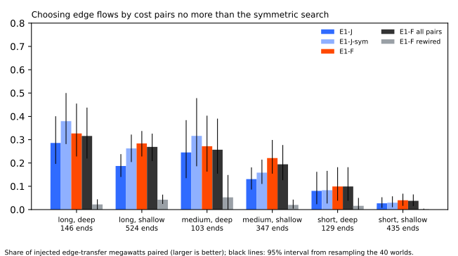
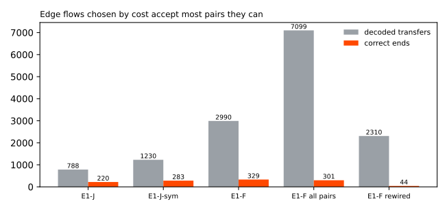

Does choosing edge flows by a fixed cost per change pair more injected load-transfer megawatts than the searches of experiments 670 and 680, without adding more false transfers?
Choosing edge flows by a fixed cost per change does not pair injected load transfers better than the simple searches of experiments 670 and 680: it pairs 0.33 of the long and deep transfer megawatts, against 0.29 and 0.38, and it decodes 2990 transfers of which only 329 ends are correct. A Primary substation steps electricity down to a local distribution network. A load transfer moves part of one Primary's demand (the donor) onto a neighbour (the recipient). An edge joins two neighbouring Primaries, and an edge flow is the megawatts that move along it. Experiments 672 and 676 closed the neural-network graph-learning approach at 15 Primaries; E1-F uses no neural network.
The terms of the line are these. E1 is the event table of experiment 653, a list of steps at each Primary. E1-J adds a search for a recipient from each large fall (experiment 670), and E1-J-sym adds a search for a donor from each rise (experiment 680). A noise unit is a Primary's usual difference between successive 6-hour means. The long, medium, and short cells are over 7 days, 1 to 7 days, and 1 day or less. Deep means 8 noise units or more, and shallow means 2 to 8. Found means an injected event has a decoded event at the right Primary, sign, and start. Paired means the decoded donor and recipient are the right two Primaries. F-hyb and R-hyb are the donor-probe hybrids of experiment 678.
E1-F decides every pair of opposite steps at two connected Primaries by cost. E1-F compares the saving in change cost with the misfit of one common flow (the donor's step and the recipient's step must roughly match, with a prior on their ratio), and takes the largest savings first. Either end can propose the other. The verdict is not supported: stop rule (a) of the decision rule closes the edge-flow line at 15 Primaries, because E1-F misses E1-J + 0.10 in both deep cells. Stop rule (b) also trips, because the all-pairs graph's false-transfer share is only 0.068 below E1-F's, inside the 0.10 tolerance.


Results (40 default worlds)
- Gate passed. E1-F with no edges has the same found share as experiment 670's E1 in every cell, to four decimals (long and deep 0.488).
- Paired share: long and deep: E1-F 0.327 (0.228 to 0.455), E1-J 0.286, E1-J-sym 0.379. Medium and deep: E1-F 0.272 (0.163 to 0.403), E1-J 0.245, E1-J-sym 0.316.
- E1-F minus E1-J (95% interval): long and deep +0.041 (-0.041 to 0.124); medium and deep +0.027 (-0.048 to 0.113); long and shallow +0.097 (0.037 to 0.150); medium and shallow +0.090 (0.032 to 0.154). E1-F minus E1-J-sym: long and deep -0.053 (-0.113 to 0.000); medium and deep -0.045 (-0.120 to 0.029).
- Donor megawatts found, long and deep: E1-F 0.491, E1-J 0.441, E1-J-sym 0.481.
- Decoded transfers and correct ends. The false-transfer share is one minus the correct ends over the decoded transfers. E1-F decodes 2990 transfers with 329 correct ends (share 0.89); E1-J 788 and 220 (0.72); E1-J-sym 1230 and 283 (0.77).
- Placebos. E1-F on a rewired graph pairs 0.022 and 0.053 in the two deep cells (2310 transfers, 44 correct ends). E1-F on all pairs pairs 0.316 and 0.257 (7099 transfers, 301 correct ends, share 0.96). E1-F on the real edges is therefore only 0.011 and 0.015 above the all-pairs graph, and its false-transfer share is 0.068 lower, under the 0.10 predicted.
- Costs. The tuning rule chose
c_edge2 anddelta8. None of the 25 pairs met the constraint of a false-transfer share no higher than E1-J's (0.75 on the validation worlds), so the highest paired share was used. All 25 pairs gave a share of 0.876 to 0.884. - Cross-injector check. Tuning on constant-MW square worlds chose the same costs, so the drop is zero by construction. On 20 constant-MW square worlds E1-F minus E1-J is +0.036 (-0.171 to 0.303) long and deep and +0.302 (0.161 to 0.473) medium and deep, the one interval that excludes zero. On long-heavy worlds the differences are +0.003 and +0.040, and on short-heavy worlds +0.020 and +0.101; those intervals include zero.
Post hoc grids (not pre-registered)
Because the planned grid gave nearly the same false-transfer share at every pair, two more grids were run on the same validation worlds, and the best pair of each was scored on the 40 default worlds.
- Wide grid:
c_edge8, 16, or 32 anddelta8, 16, 32, or 64. No pair met the constraint (best share 0.875). The chosen pair (c_edge8,delta64) pairs 0.349 and 0.293 in the two deep cells (+0.063 and +0.048 over E1-J, intervals -0.016 to 0.148 and -0.019 to 0.135), with 3008 decoded transfers and 348 correct ends. In E1-F a larger cost for a step that stands alone raises the saving from merging, so this grid ran in the direction that cannot restrict merges. - Low grid:
c_edge0, 0.5, or 1 anddelta0, 0.1, or 0.25. No pair met the constraint (shares 0.884 to 0.897). The chosen pair (c_edge0,delta0.25) pairs 0.314 and 0.257, with 2858 decoded transfers and 307 correct ends, and the all-pairs graph pairs 0.302 and 0.174.
Costs from 0 to 64 therefore left the false-transfer share between 0.88 and 0.90. The costs of E1-F do not separate a true pair from a coincident pair. The misfit term, the compatibility rule, and the candidate steps were not varied.
Real record
- Decoded transfers (2024-01 to 2026-06, 36.0 Primary-years): E1-F 17; E1-J 8; E1-F on the stored rewired graph 4, with a median of 6 over 100 rewired graphs; E1-F on all pairs 30. NGED's event labels are an incomplete dump, so every count of real events is a lower bound.
- Verified D5 to D16 transfer (December 2025): one flow with D5 as the donor (-1.08 MW) and D16 as the recipient (+1.28 MW, a share of 1.19), the same pair as E1-J found. Both starts are late (D5 by 24 hours, D16 by 12.5 hours), and both ends are 24 hours late, so the pre-registered bars of 6 hours at the start and 12 hours at the end do not hold. The donor amplitude is under the 1.2 to 2.2 MW range.
- Logged shifts longer than 1 day (77 in the scored years): 10 have an event start within 2 hours (E1-J: 8, from experiment 670) and 21 within 24 hours (E1-J: 18).
- Event-free time (27.6 Primary-years more than 14 days from a logged or verified event): E1-F calls three transfers; E1-F on all pairs calls 11.
Pre-registered predictions
- Held:
- Long and shallow E1-J + 0.05: +0.097.
- Medium and shallow E1-J + 0.03: +0.090.
- Short cells no worse than E1-J - 0.03.
- Paired share on all pairs no more than 0.03 below E1-F: 0.011 and 0.015 below.
- E1-F on the stored rewired graph calls a third or fewer of E1-F's real-record transfers: 4 of 17. The median over 100 rewired graphs is 6, just over a third.
- D5 to D16: one flow with D5 as the donor, a share of 1.19, and D16 at 1.28 MW.
- Did not hold:
- Long and deep paired 0.39 or more: 0.327. Medium and deep 0.35 or more: 0.272.
- Three points above the better hybrid in both deep cells (about 0.36 and 0.33).
- Donor megawatts found 0.54 or more: 0.491.
- E1-F minus E1-J-sym +0.05: -0.053 and -0.045.
- False-transfer share 0.10 below all pairs: 0.068 below.
- Rewired pairs 0.05 or less: 0.022 and 0.053.
- No-edges found share within 0.03 of E1-F: 0.039 and 0.044 below.
- D5 to D16 start and end timing, and the donor amplitude of 1.2 MW or more.
Method
- Code:
ml-experiments/00682-event-table-reconstruction-from-edge-flows-part-2-change-cost-model/, importing the folders of experiments 653, 660, 665, 670, and 680. The panel, residual, worlds, cells, and the found and paired definitions are unchanged. E1-J and E1-J-sym are read from the stored rows of experiments 670 and 680. - Steps and costs. E1-F uses E1's steps of 2 noise units or more, plus the opposite step that
each proposes at each connected Primary. A step that stands alone costs
c_edge + delta. An edge flow costsc_edgeplus 1 for each recipient beyond the first. The misfit is half the squared distance, in noise units, from the best common amplitude and share (a share between 0.3 and 2.0 on a 24-point grid, with a normal prior on its logarithm of meanlog 0.8and standard deviation 0.5). E1-F does not build the segment-boundary search with end moves, ramps, or a routine-step cost, and uses E1's own segment boundaries. - Tuning. The costs were tuned on 60 validation worlds (seeds 20000 to 20059, events from 2023-07-01 to 2023-12-31, readings after 2023-12-31 hidden).
- Reviews. A fresh Sonnet code review ran before the first scored run. The review found that a
flow made only of proposed steps crashed
reconstruct, that tuning counted correct ends differently for E1-J and E1-F, that validation truth ran past the hidden readings, that the fitted share was not stored, and that the fallback was not recorded; all were fixed. A bug in the real-record run (noise units from the wrong residual) was found afterwards and fixed before the real-record numbers above. A fresh Sonnet agent reviewed the results and the write-up; it found two wrong cost-grid figures, a wrongly marked prediction, a misleading description of the all-pairs comparison, and an unsupported conclusion from the wide grid, and all were corrected. - Compute: CPU only, 2 cores, under 1 hour. The final-test window from 2026-07-01 is never read. No NGED generator is named.
What the next experiment should answer
The remaining gap is information that the power of the 15 Primaries may not carry: which neighbour received the load. One option is a source of that information, such as NGED's records of which circuits were switched. This experiment does not test whether another model fitted to the same residuals would do better.
Files
figure_paired_by_cell.svgandfigure_decoded_transfers.svg: the figures above.- Private tables:
data/ml-experiments/00682-event-table-reconstruction-from-edge-flows-part-2-change-cost-model/.